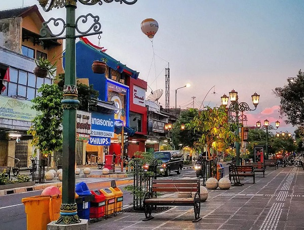
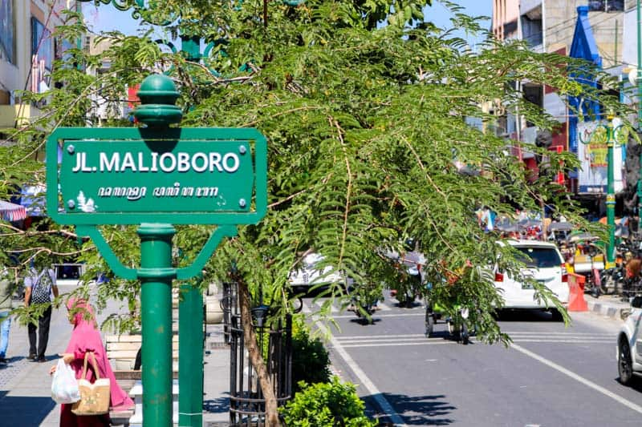
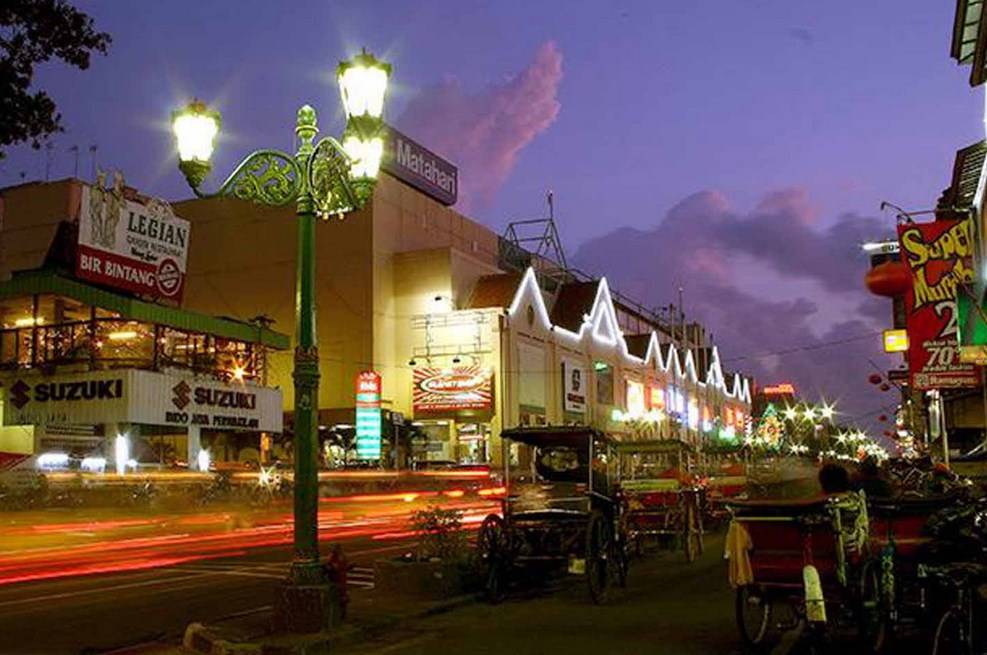
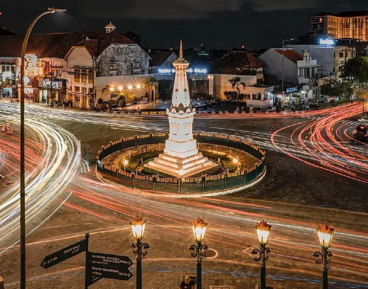
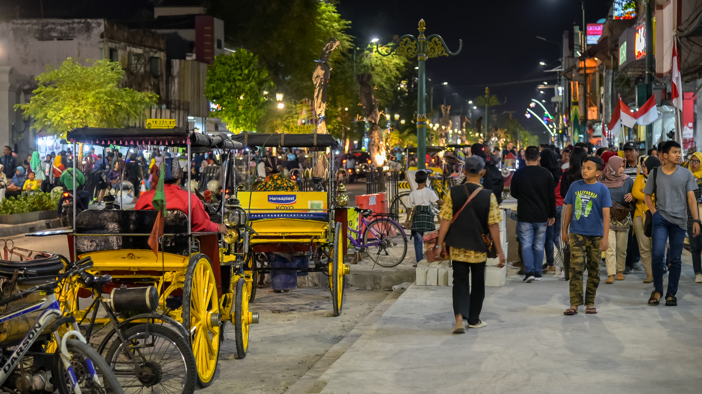
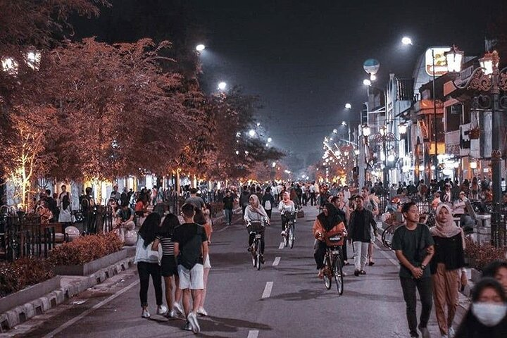
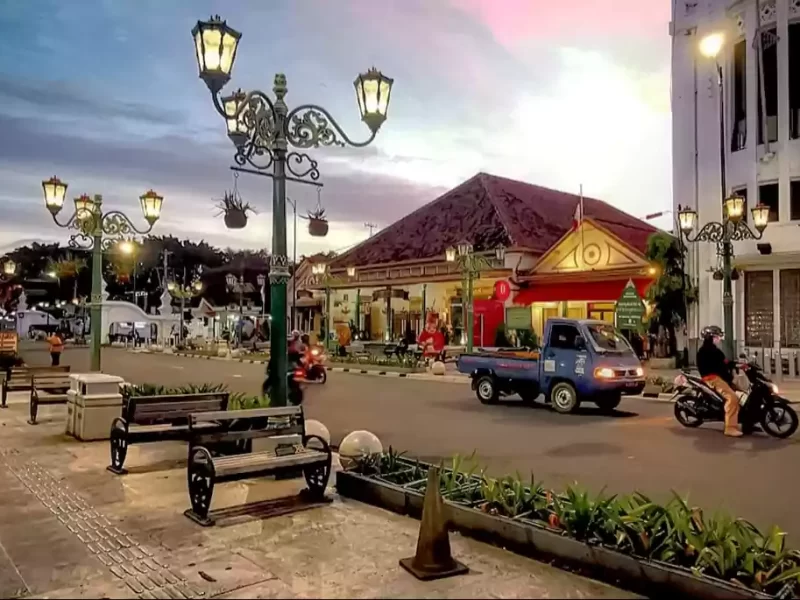

Sejarah Jalan Malioboro

Jalan Malioboro dibangun bersamaan dengan berdirinya Keraton Ngayogyakarta Hadiningrat pada tahun 1755 oleh Sri Sultan Hamengku Buwono I.
Awal Mula dan Fungsi Filosofis (Abad ke-18)
Secara filosofis, Malioboro dirancang sebagai bagian dari Sumbu Filosofis Yogyakarta—garis imajiner yang menghubungkan Gunung Merapi, Tugu Yogyakarta, Keraton, hingga Laut Selatan.
- Arti Nama: Nama "Malioboro" diyakini berasal dari bahasa Sanskerta Malyabhara yang berarti "berhiaskan karangan bunga". Teori lain menyebutkan nama ini terinspirasi dari gelar Duke of Marlborough.
- Fungsi Awal: Jalan ini digunakan sebagai rute prosesi keprajuritan dan penyambutan tamu kehormatan Keraton.
Perkembangan Menjadi Pusat Ekonomi (Abad ke-19 hingga 20)
Pemerintah kolonial Belanda mulai membangun kawasan ini untuk mengimbangi pengaruh Keraton pada abad ke-19:
- Pembangunan Benteng Vredeburg (1760) & Gedung Agung (1824): Menjadikan kawasan ini sebagai pusat pemerintahan kolonial.
- Pertumbuhan Permukiman & Perdagangan: Etnis Tionghoa mulai menetap di kawasan Kranggan dan Ketandan, melahirkan aktivitas perdagangan di Pasar Gede (kini Pasar Beringharjo) yang bertransformasi menjadi pusat ekonomi lokal.
Faktor Utama Ketenaran Malioboro Saat Ini
- Pusat Kebudayaan & Ruang Komunitas: Pada era 1970-an, Malioboro menjadi tempat berkumpulnya seniman, penyair, dan budayawan ternama (seperti Malioboro Seniman/Persatuan Seniman Jogja), menjadikannya simbol kebebasan berekspresi seni.
- Ikon Pariwisata dan Kuliner: Kehadiran musisi jalanan, kuliner khas lesehan gudeg, hingga cinderamata toko batik menjadikan Malioboro tujuan wajib wisatawan yang berkunjung ke Yogyakarta.
- Revitalisasi Pedestrian Ramah Pejalan Kaki: Penataan kawasan dalam beberapa tahun terakhir—seperti penataan PKL ke Teras Malioboro dan pelebaran trotoar dengan bangku-bangku ikonik—membuat jalurnya semakin nyaman, estetis, dan modern tanpa menghilangkan identitas sejarahnya.
Lokasi Jalan Malioboro
Jalan Malioboro terletak di pusat Kota Yogyakarta, Daerah Istimewa Yogyakarta.
Galeri Foto





